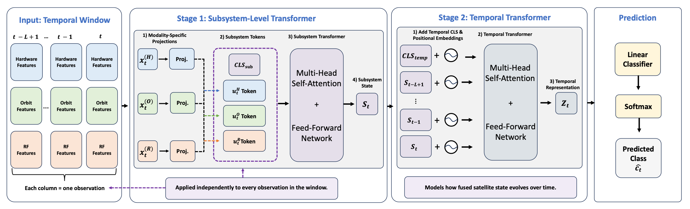

Temporal and Multimodal Deep Learning for Cyberattack Detection in LEO Satellite Systems
Combining hardware, orbital, and radio-frequency telemetry to detect satellite cyberattacks across time.

I develop data-efficient, robust artificial intelligence for cybersecurity, with an emphasis on systems that generalize to unseen threats and continue adapting as attack behavior changes. My work spans transformer-based packet modeling, few-shot and continual learning, vision-language models, and backdoor defense.
Combining hardware, orbital, and radio-frequency telemetry to detect satellite cyberattacks across time.

My research centers on robust learning under distribution shift, limited labels, emerging attack behavior, and changing operational environments.
Transformer-based modeling of network traffic and cyber behavior for malware detection, threat recognition, and adaptive defense.
Parameter-efficient adaptation that learns new threats from limited examples while preserving previously acquired knowledge.
Compositional reasoning, prompt-based adaptation, and open-world defenses for detecting previously unseen backdoor behavior.
Kyle Stein, Guillermo Francia III, Eman El-Sheikh, Andrew Arash Mahyari
arXiv preprint · arXiv:2608.23536
Kyle Stein, Andrew Arash Mahyari, Guillermo Francia III, Eman El-Sheikh
IEEE/CVF International Conference on Computer Vision (ICCV) Workshops
Kyle Stein, Guillermo Francia III, Eman El-Sheikh, Andrew Arash Mahyari
IEEE Access
Kyle Stein, Andrew A. Mahyari, Guillermo Francia III, Eman El-Sheikh
IEEE International Conference on Image Processing (ICIP)
Center for Cybersecurity and Artificial Intelligence, University of West Florida
Critical Infrastructure Protection Group, Johns Hopkins University Applied Physics Laboratory
U.S. Department of Homeland Security, Science & Technology Directorate